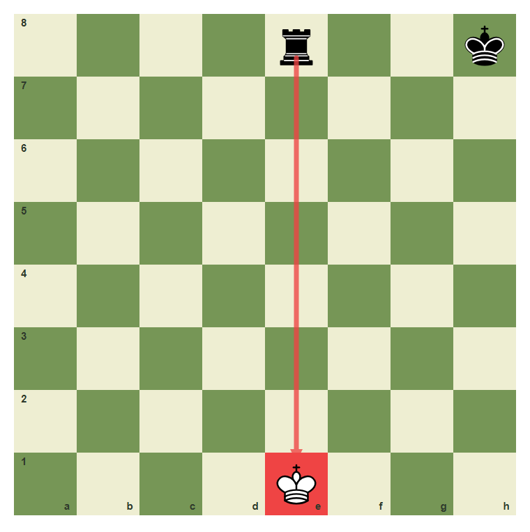
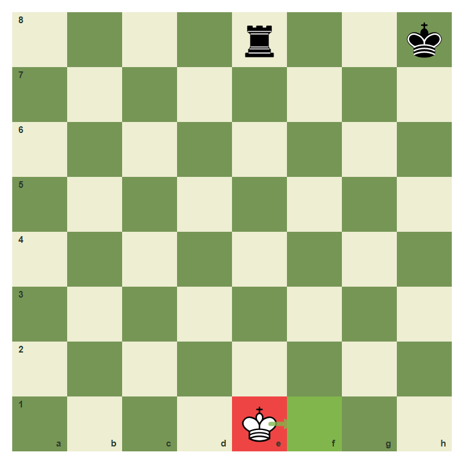
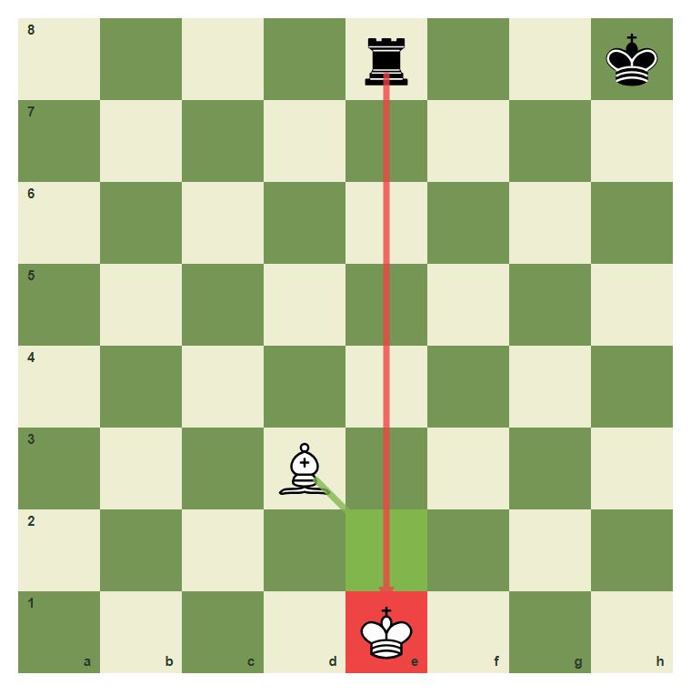
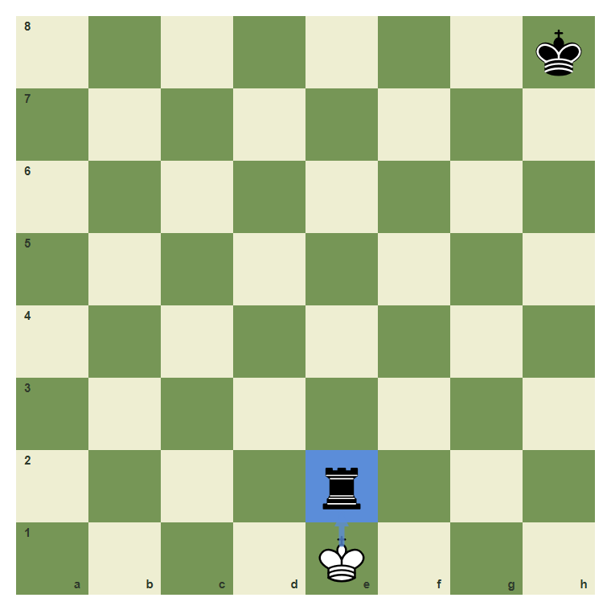
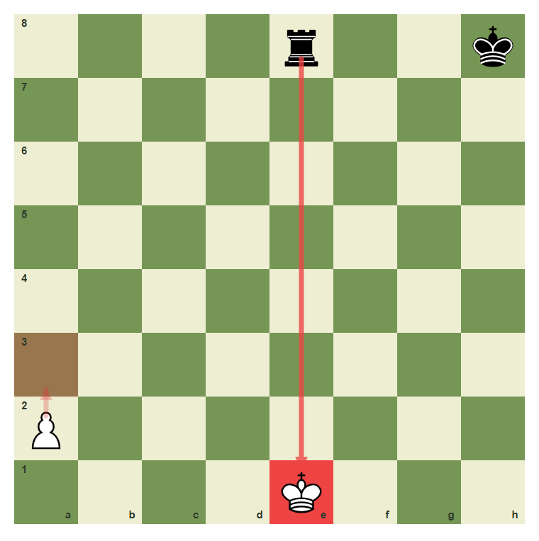

Check And Escaping Check
When the king is attacked, the next move must answer it.
- Recognize when a king is in check.
- Escape check by moving the king.
- Escape check by blocking the attack.
- Escape check by capturing the checking piece.
- Reject moves that ignore check.
A Direct Attack On The King
Check means the king is under attack. When your king is in check, you do not get to play any move you like. Your move must make the king safe.
The rook gives check

The rook on e8 attacks the king on e1 along the open e-file.
Escape by moving the king

White can move the king from e1 to f1 to leave the rook line.
Three Ways To Escape
There are three normal ways to answer check: move the king, block the line, or capture the checking piece. Some checks allow only one of these.
Escape by blocking

The bishop can move to e2 and block the rook line.
Escape by capturing

If the checking rook is unprotected, the king can capture it on e2.
You may not ignore check

The move a2 to a3 does not answer the check, so it is illegal here.
Move out of check
White is in check from the rook on e8. Move the king from e1 to f1.
Common Mistake
Common mistake: playing a normal move in check
The pawn move a2 to a3 may be legal in a quiet position, but not while the king on e1 is in check. Check must be answered immediately.

A move that ignores check is not legal.
Chapter Checkpoint
What is check?
Check means:
What must you do in check?
When your king is in check, your next move must:
Which is not a normal escape from check?
Which answer does not normally escape check?